私の音楽遍歴〈制作中〉
【1974】
Blue Swede
私が本格的に洋楽を聴くようになったキッカケは、
確か、黒澤久雄さんがＤＪをしていた日曜日のラジオ番組で、
このバンドの曲を聴いたのが初めだと思います。今でも大好きな曲なのですが、当時、
『Hooked On A Feeling』という曲が 日本でもヒットしていました。
（※↑はその曲が収録された唯一の現在入手可能なＣＤです）
子供ウケしそうなフレーズが印象的な曲ですが、
もっと深いものを感じます。
それは、ボーカルの Björn Skifs という人の力量が大きいです。
その力量が如実にうかがえるのが、
その後、何枚目かにリリースされた『Half Breed』という曲です。
（※母国ではこちらのほうが先？？？）
日本では、おそらくキワモノ的な一発屋と思われていると思いますが、
この２曲をよくよく聴いてみると、本当に味わい深く、かつ、たくましい、
この人たちのパワーが感じ取れるのではないかと思います。(^_^)
・
Three Dog Night
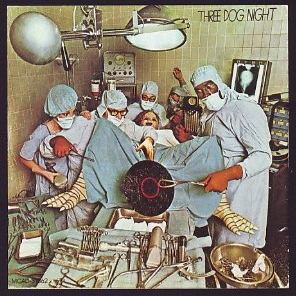
その次にハマッたのが、このバンドの、
『The Show Must Go On』という曲です。
（※↑はその曲が収録されたアルバムです）
（＃しっかし、なんつージャケットだ...^^;;;）
バンドの経歴からすると、末期の曲になりますが、
なんだかサーカスでも始まりそうな、ピエロでも出てきそうなイントロからスタートし、
歌声が なんとも うら悲しいというか、哀感あふれるというのか、
五臓六腑にシミわたる(?)(笑)ような、せつないボーカルが
魂に響く曲です。(^o^;;;
ちなみに、このバンドのヒット作＝代表曲としては、
『Joy to the World』『An Old Fashioned Love Song』などがあります。
（※どちらも1971年の作品）
・
Commodores
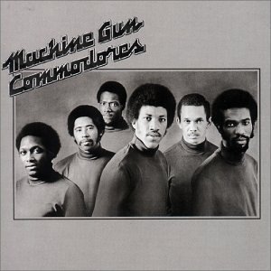
私は、洋楽にハマるようになってから、すぐに、
ロックよりも、ソウルのほうに傾注していきました。(^_^;;;
その代表格が コモドアーズで、
特に好きなのが『Machine Gun』です。
この曲は、ボーカルがなく、いわゆる instrumental number なのですが、
まだ洋楽を聴き始めて間もない頃の若い私が
思わず、カッチョイイ！！！と思った曲です。(^o^;;;
この頃のソウルミュージックには、
Stevie Wonder などでもみられるブンチャカした感じのサウンド(笑)がよく出てくるのですが、
この曲もそんな感じのシンセの音？がカッコ良く使われています。(^_^;
・
First Class
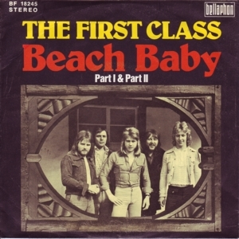
↑で ソウルに傾注と書いておきながらなんですが、(汗)
私は ポップスも もちろん好きで、
特に明るい感じの曲が好きなのですが、
このグループの『Beach Baby』という曲にもハマりました。(^o^;;;
本当に、これぞアメリカンサウンド？(笑)といった感じで、
私は当時、すげーなと思いながら聴きホレていましたが、
日本でも、世界的にもあまり大ヒットにはなっていない？ようで、
このグループは、もう１曲ぐらい出して解散してしまいました。(；_；)
・
ABBA
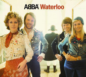
ポップスといえば、この頃デビューした、このグループを外しては語れませんね。(笑)
一般的には『Dancing Queen』で 知られる人たちですが、
私は、やはり世界的に認知されるようになった『Waterloo』が 一番 大好きです。(^_^)
ポップスは やはり、単純明快で 軽いのが 一番いいですね。(笑)
・
Golden Earring
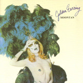
この年 日本でヒットしたロックサウンドの曲の中で、
私が一番に推したいのが、このグループの『Radar Love』という曲です。
（※アメリカでは前年にリリースされ、1974年にヒットを記録）ジャケットの絵からは想像もつかないような、
非常に硬派で ドラマチックな展開を見せる この曲は、
年代を経て聴き直してもメチャクチャカッコイイです。(^o^;;;
・
Bachman-Turner Overdrive
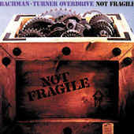
ロックのほうを少し語っておくと、
この頃日本でもヒットしていたバンドで、
このバンドが好きでした。
今から思うとちょっと泥臭い感じもしますが、
骨太な感じが心地いいです。(^_^)
この年リリースした『Not Fragile』というアルバムから、
『You Ain't Seen Nothing Yet』と『Roll On Down The Highway』が ヒットしました。
（もちろん、他にもヒットは ありますが）
そういえば、洋楽を聴くようになってから、
学校で習わないような単語とか綴りとかを覚えるようになりましたね。(^_^;;;
ただ、さすがに歌詞までは覚えようとは思いませんでしたが。(笑)
・
Grand Funk Railroad
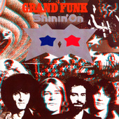
このバンドの曲では『The Loco-Motion』が 大ヒットし、
今でもよくＣＭでも使われたりするので、
なんとなく手垢の付いたようなイメージもあるのですが、
やはり、その曲だけでなく、
『We're An American Band』や『Some Kind Of Wonderful』を含めて
聴いてもらいたいですね。(^_^;
・
Elton John
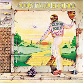
そういえば、この頃 世界を席捲していたアーティストとして
まず一番にあげられるのではないかと思われるのが、
エルトン・ジョンですね。特に前年の『Crocodile Rock』とか『Goodbye Yellow Brick Road』など、
メチャクチャ大ヒットしてよく知られるようになりました。(^_^;
わたし的には、この年ヒットした『Bennie And The Jets』が
メチャクチャ好きですね。
あとは、『The Bitch Is Back』や『Philadelphia Freedom』なんかが
アメリカ的(笑)で、好きでした。(^o^;;;
（※エルトン・ジョンは イギリスのアーティストですが、
フィラデルフィアはアメリカの都市ですね(爆)）
他にも、ジョン・レノンとの共作になる『Lucy In the Sky With Diamonds』とか、
『Don't Let The Sun Go Down On Me』『Island Girl』などなど、
カッコ良くて好きな曲が多いです。(^_^)
・
Suzi Quatro
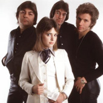
イギリスつながりというわけではありませんが、(笑)
私が洋楽に本格的にハマり始めた1974年の春ごろ、
この人の『Devil Gate Drive』という曲が 日本ではヒットしていました。女性ハードロッカーとして、今でも珍しい存在なのでないかと思いますが、
今聴くと、ちょっとウルサイです。(^o^;;;
・
Bad Company
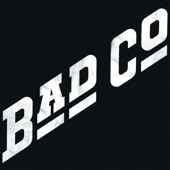
イギリス＆ロックということでは、忘れてならないのが、
この年デビューの このグループです。
私は、当時、なぜか、このグループが ものすごく好きで、
ちょうどギターも始めたので、
このグループの楽譜を買って練習したりしていました。(^.^;;;
・
Lynyrd Skynyrd
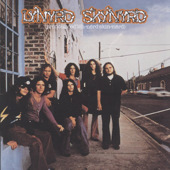
私はどうもブルースロックというジャンルのものが好きなようで、
このグループなんかもまさにストライクゾーンでした。(^o^;;;
（※レーナード・スキナードはサザンロックともいわれますが、
まぁ、どちらも似たようなもんです(笑)）
・
Eric Clapton
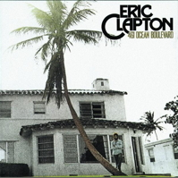
そういう意味では、エリック・クラプトンなんかは、
まさにブルースロックにジャンル分けされる人ではないかと思うのですが、
この年ヒットした『I Shot The Sheriff』は 異色な曲といえますね。
（※そもそもが ボブ・マーレーのカバーなので当然なのですが）
このあたりから、私は日本のチャートものではなく、
直接アメリカのチャートをチェックするようになっていて、
毎週、音の悪いラジオ関東(笑)（現・ラジオニッポン？）で、
『American Top 40』を聴くようになりました。(^_^;
その頃、この曲がヒットしていて、いつも上位に入っていたのを覚えています。
・
Bo Donaldson & The Heywoods
そういえば、当時聴き始めた 『American Top 40』で ちょうどチャートインしていた曲の中で
強烈に印象深いのが、彼らの『Billy, Don't Be A Hero』という曲です。
（※この曲はゲットするのに大変でした...(=_=;;;）
この曲は、いわゆる反戦ソングなのですが、声高にそれを叫ぶのではなく、
“ヒーローになんかならなくても、生きて帰ってくることのほうが大事なんだ”ということを
軽い調子で歌っているのが、意外と心に訴えるものがあるような気がします。(^_^;
ちなみに、この曲は、周知のようにオリジナルではなく、
Paper Lace という人たちの曲なのですが、
私にとっては、聴き始めたタイミングのせいで、
まず先に彼らのほうを思い出してしまいます。(^.^;;;
その他の彼らのヒット曲としては、その後の『Who Do You Think You Are』も
せつない感じのポップスという感じで、すごく好きな曲です。(^_^;
・
Barry White
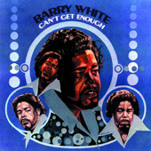
ソウルのことも書かねば...(笑)
この年、大御所の衝撃的大ヒット曲と遭遇してしまったのが、
そもそものソウルの虜となった原点なのかもしれません。(^o^;;;1974年は、この人の当たり年(笑)、ピークの年だったみたいなのですが、
私も『You're the First, the Last, My Everything』や
『Can't Get Enough of Your Love, Babe』なんかの
シブイおじさまの声にミイラれて(笑)しまいました。(^o^;;;
・
The Love Unlimited Orchestra
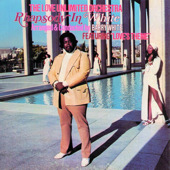
そういえば、バリー・ホワイトといえば、
この人たちの『Love's Theme』は、今でも名曲の１つとして、
何かのＢＧＭなどに使われる曲ですね。
・
MFSB （Mother Father Sister Brother）
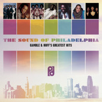
それから、当時は、インストゥルメンタルの曲が多かった気がしますが、
その１つというか、私の大好きなグループ（オーケストラ？）で忘れられないのが、
ＭＦＳＢの『T.S.O.P. (The Sound of Philadelphia)』という曲です。
（※iTunesで検索すると全然違うグループが出てくる...(=_=#;;;）
この曲は、ディスコブームの先駆けとなった、知る人ぞ知る『SOUL TRAIN』のテーマ曲で、
全編インストゥルメンタルの中に、時々、The Three Degrees のコーラスが入るのが、
カッコ良いというか、後から考えるとゼイタクな(笑)曲となっています。(^o^;;;
この曲を聴くと、本当に私が洋楽を聴き始めた年は、
ソウルの当たり年だったんだなぁという気がします。(^_^;
（＃改めて聴いてみたら、こんなにテンポのノロイ(爆)曲だったかなぁと思ってしまったのですが、
ライブバージョンだとテンポが速いので、私の記憶にあるほうはそっちなのでしょう）
・
Hues Corporation
さて、それから、もう１つ、ソウルの醍醐味というか、
いかにも当時のソウルっぽい感じをよく表しているというか、
そういうものを感じさせてくれるグループが彼らで、
その代表曲が『Rock The Boat』です。
このゆったりしたノリが、ちょうど、
ドゥーワップとファンクの間の速さというか、
心地良い速さなんですね。(^o^;;;
ウィキペディアで調べてみると、
彼らの経歴は長いみたいですが、
その大ヒット曲の前は大したヒット曲もなかったようです。
また、その後も、私の記憶では目立ったヒットもなかったようで、
ほとんどその１曲だけで解散してしまったと言うと言い過ぎかもしれませんが、
私の中ではそんな印象があります。(^.^;;;
・
Carol Douglas
↑ の Hues Corporation と同様に、
私の中で、１曲だけ強烈に印象深く残っている曲（人）の１つが、
この人の『Doctor's Orders』という曲です。(^_^;
イントロの電話の呼び出し音が、
当時の日本のものと異なっていたのがまず驚きというか、
ワクワク感を高めてくれました。(笑)
そして、英語での恋人同士の会話・・・。
なんか、カッコ良いですね〜。(^o^;;;
考えてみると、このへんのあたりから、
その後のディスコサウンドの流れが始まっているような気がしますね。